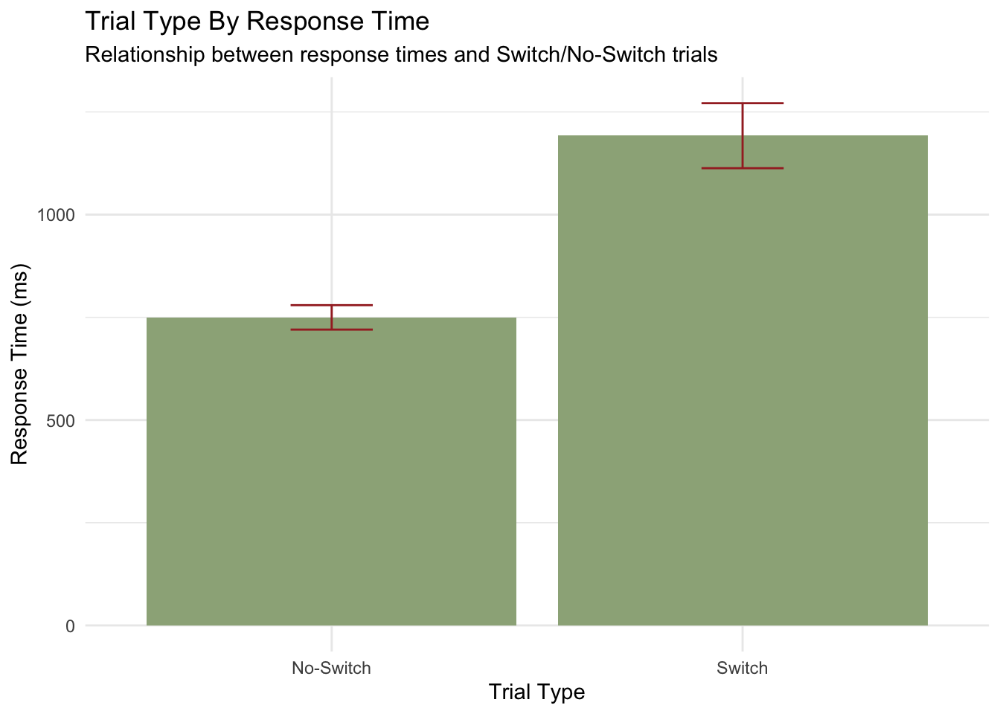

Experimental design: Switching every 4 trials in an alternating runs manner (no cues). Total of 8 experimental blocks were intended, but 60 subjects saw only 7 blocks. Across these blocks counterbalancing of four conditions: Both tasks unambiguous (1), both tasks ambiguous (4), shape ambiguous when irrelevant, color always ambiguous (2), shape always ambiguous, color unambiguous when irrelevant (2),
Import data-set and some packages
#open neccessary packages herelibrary(tidyverse)
── Attaching core tidyverse packages ──────────────────────── tidyverse 2.0.0 ──
✔ dplyr 1.1.4 ✔ readr 2.1.5
✔ forcats 1.0.0 ✔ stringr 1.5.1
✔ ggplot2 3.5.1 ✔ tibble 3.2.1
✔ lubridate 1.9.3 ✔ tidyr 1.3.1
✔ purrr 1.0.2
── Conflicts ────────────────────────────────────────── tidyverse_conflicts() ──
✖ dplyr::filter() masks stats::filter()
✖ dplyr::lag() masks stats::lag()
ℹ Use the conflicted package (<http://conflicted.r-lib.org/>) to force all conflicts to become errors
library(janitor)
Attaching package: 'janitor'
The following objects are masked from 'package:stats':
chisq.test, fisher.test
library(readr)library(rio)library(psych) #generate metrix w scatterplot and cor
Attaching package: 'psych'
The following objects are masked from 'package:ggplot2':
%+%, alpha
Rows: 94754 Columns: 16
── Column specification ────────────────────────────────────────────────────────
Delimiter: ","
dbl (16): id, bal, block, x, cond, trial, y, c2, cycle, task, dim1, dim2, co...
ℹ Use `spec()` to retrieve the full column specification for this data.
ℹ Specify the column types or set `show_col_types = FALSE` to quiet this message.
#use pivot long and/or? wide here with some key variables we want to look at. may need to alter df to turn some 1s and 0s in columns to be names... (correct, incorrect or color, shape). fix code below...# alt_run %>% # pivot_wider(names_from = task, values_from = block)
Descriptive Graphs
Histogram of RT
mean_rt <-mean(alt_run$RT, na.rm =TRUE)sd_rt <-sd(alt_run$RT, na.rm =TRUE)alt_run %>%arrange(desc(RT)) #there are quite a few RTs that get up to 10000 ms for one trial... determine outliers
alt_run %>%ggplot(aes(x=RT)) +geom_histogram(aes(y =after_stat(density)), fill ='darkgray', color ='darkblue') +geom_vline(aes(xintercept = mean_rt) , color ='red', linetype ='dashed', size =1.5) +theme_minimal() +stat_function(fun = dnorm, args =list(mean = mean_rt, sd = sd_rt) , col ='darkred', size =1.5) +labs(x='Response Times (ms)', y='Density', title ='Histogram of Response Times', subtitle ='The mean and normal density curve of RTs')
Warning: Using `size` aesthetic for lines was deprecated in ggplot2 3.4.0.
ℹ Please use `linewidth` instead.
`stat_bin()` using `bins = 30`. Pick better value with `binwidth`.
Boxplot of RT
#boxplot of all RTs regardless of taskboxplot(alt_run_1$RT)

#boxplot of RTs when doing shape taskboxplot_s <-filter(alt_run_1, task =='shape')boxplot(boxplot_s$RT)
#boxplot of RTs when doing color taskboxplot_c <-filter(alt_run_1, task =='color')boxplot(boxplot_c$RT)
Correlations
cor_alt <- alt_run %>%select(RT, cycle, task)cor(cor_alt, use ="complete.obs")
#is there a correlation between response times and error rate? also note: used the psych package to generate this alt_run %>%select(RT, error) %>%pairs.panels(lm =TRUE)